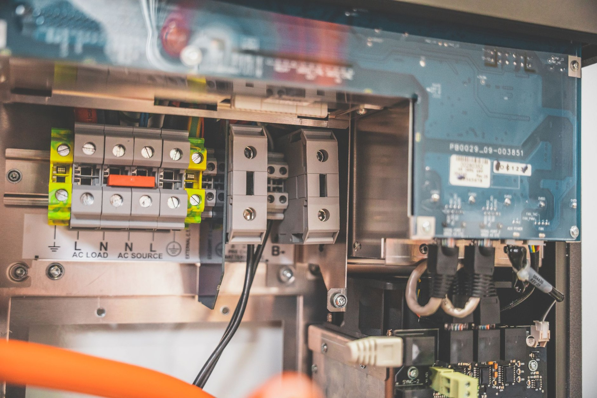
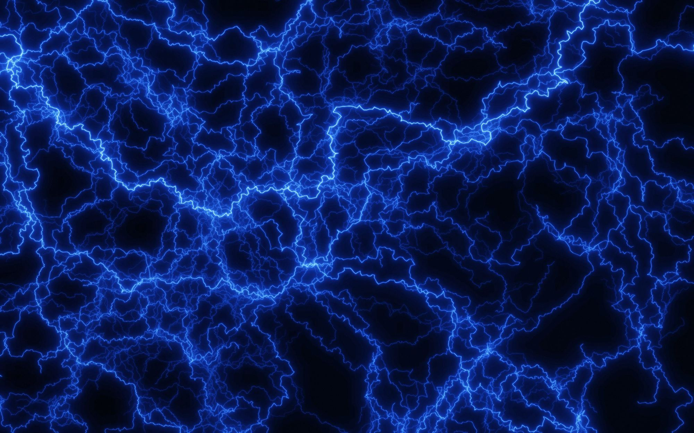

Strona główna / Kontakt
Zadzwoń o każdej porze.
Najszybciej telefonicznie. Odbieramy całą dobę, 7 dni w tygodniu.
Telefon całą dobę+48 698 686 608
Opisz, co się dzieje, a od razu powiemy, ile to mniej więcej kosztuje i kiedy możemy być. Przy awarii podpowiemy też, co wyłączyć do naszego przyjazdu.
Zadzwoń terazAdres firmy
Elektrodom Bartosz Sierakowski
ul. Stanisława Żółkiewskiego 5/14
70-345 Szczecin
Godziny pracy
- Poniedziałekcałą dobę
- Wtorekcałą dobę
- Środacałą dobę
- Czwartekcałą dobę
- Piątekcałą dobę
- Sobotacałą dobę
- Niedzielacałą dobę

Zgasło? Iskrzy? Dzwoń.
+48 698 686 608Odbieramy całą dobę, 7 dni w tygodniu. Opowiedz, co się dzieje, a powiemy, kiedy możemy być i co wyłączyć do naszego przyjazdu.
Zadzwoń teraz